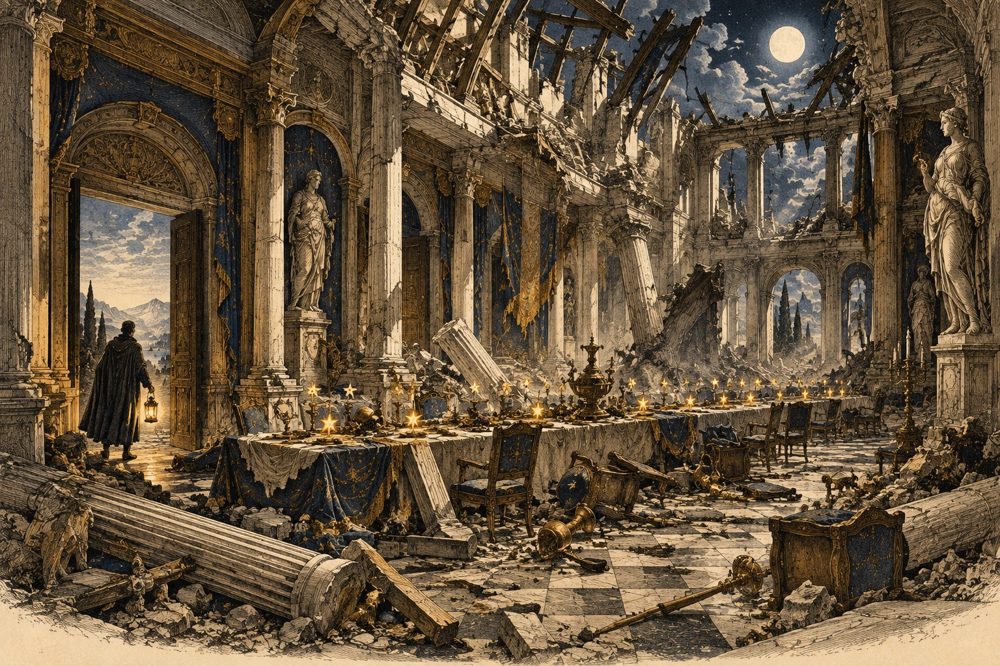

A prime minister who had his speeches typed like poems, and how to carry a twenty-minute talk in nested palaces without losing your place.

← Ideas You Cannot See · The whole course · Keeping a Book →
London, 1940. A prime minister is about to give a speech that the whole country is waiting to hear. He does not read it from a page of dense paragraphs. His secretaries have typed it in short lines, with extra space between phrases, in a layout they called psalm form because it looked like a psalm in a prayer book.
Winston Churchill, famous for his speeches, wrote them out in full and went over them again and again. But on the day he did not trust them to a block of text. The layout told his eye where to breathe, where to pause, and where the next idea began.
There is a lesson in it for memory. A long speech is not one thing. It is a series of small pieces, each with its own beginning, middle and end. If you know where each piece starts, you can always find your way.
A twenty-minute talk is too long for a single list of five pictures. But it is easy for a speaker with a main palace, in which each room holds one section, and in which each section has its own small chain of pictures, like drawers in a cabinet.
The best speakers also use patterns that listeners can follow without effort. The oldest is the rule of three: ideas in threes feel complete, and are easy to remember for both the speaker and the audience. Another is the return: an image or phrase that comes back at the end.
In this lesson you will plan a longer speech, add small anchors between the sections, and rehearse it aloud the way a performer does: for timing, for breath, and for the moment when everything goes wrong and you must carry on.
Say what you think each one means, then open it.
The 'psalm form' layout of Churchill's speech notes is described by his secretaries. Retold here in our own words.
For a talk of about twenty minutes, use a main palace for the sections and a small chain in each room for the details.
Have a go before you open any answer. A rough attempt teaches you more than a perfect model you only read.
Say the answer first, then tap the card.
Learn the six sections of the library talk in order: opening, why it was needed, what it offers, what it cost, the return, the close.
Door, hall, living room, kitchen, stairs, bedroom: a picture in each.
The list has gone. Type what you remember, one item per line.
These reach back to earlier rooms. Answer in your head or out loud, then check.
What is the longest talk you may give this year? What would its six sections be?